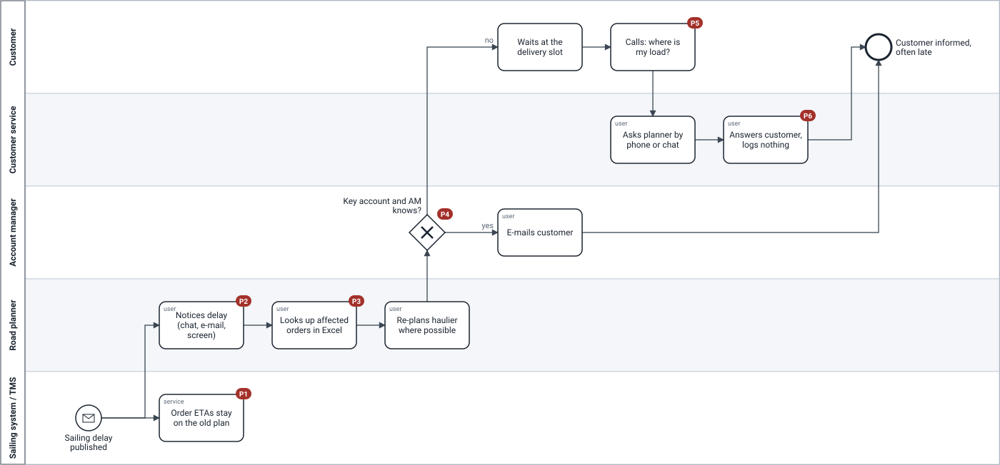
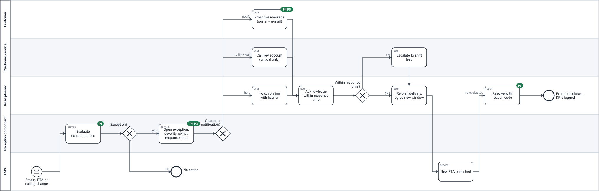

Overview / Process
From "the customer calls" to "we told them first"
The same sailing delay, before and after release 1. Modelled in BPMN 2.0; the source files open in Camunda Modeler or bpmn.io.
AS-IS — today
The information exists within minutes. It gets lost between people: nobody owns the step from "delay known" to "customer told". Red labels are pain points.

| # | Pain point | Evidence |
|---|---|---|
| P1 | Order ETAs stay on the old plan; nobody evaluates what the delay means | 2 of 7 delayed orders showed the old ETA an hour later |
| P2 | The delay is noticed by chance | chat, e-mail, haulier WhatsApp |
| P3 | Affected orders looked up by hand in Excel | ±25 min per delayed sailing |
| P4 | Only key accounts whose account manager knows are told | 22% told before the window |
| P5 | The customer finds out at the slot and calls | ±1,250 WISMO contacts a week |
| P6 | Nothing is recorded | no reason on 60% of credit notes |
Illustrative assumptions — not real company data.
TO-BE — release 1
Every change is evaluated by the exception rules. Only what puts the window at risk becomes an exception, with an owner and a response time. The customer is told proactively — except for a missing status, which a planner confirms first. Green labels show which pain point each step removes.
